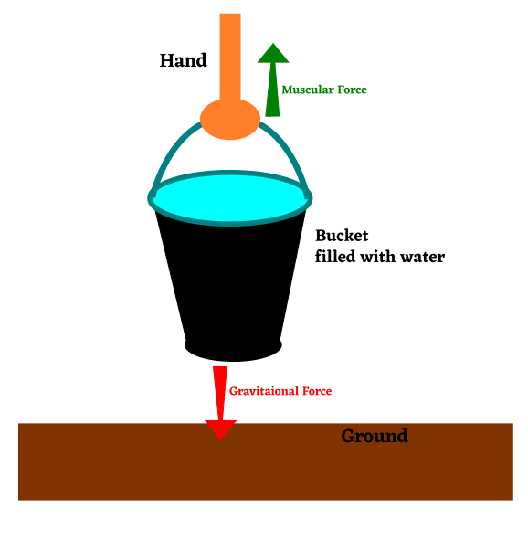

Choose the correct answer: 1×2M = 2Marks
Pick the Synthetic fibre out of the following Nylon.
State of motion is described by both position of rest and position of motion.
Position of Rest
Position of Motion
Both (a) and (b)
None of these
Fill in the Blanks: 1×2M = 2Marks
Synthetic Fibres are also called polymers or man-made fibres or artificial fibres.
The north pole of a magnet, repels the north pole of another magnet.
Answer the following: 4×2M = 8Marks
Explain why some fibres are called synthetic.
Some fibres are called synthetic because they are man-made and not available in nature and cannot be obtained from plants or animals. These fibres are made by combining many small units of chemical substances to from long polymer chains.
Give two examples each of situations in which you push or pull to change the state of motion of objects.
Examples of Push:
> Pushing down a hand sanitizer dispenser.
> Pushing down a liquid soap dispenser.
> Pushing down perfume spray bottle.
> Pushing the table.
> Kicking a football.
> Hitting a cricket ball.
Examples of Pull:
> Pulling down a rope to lift bucket from a well.
> Tying or opening the shoe laces.
> Tying or opening a neck Tie
> pair of bulls/horses pulling a cart.
> A truck towing a car.
> Plucking flowers or fruits from a plant.
Explain why plastic containers are favoured for storing food.
The reasons why plastic containers are favoured for storing food are,
> Plastic is Non-reactive. Metals like copper, bronze etc can react with acidic chemicals present in food and may harm us.
> Plastic is Light, Strong and Durable. Metals are heavy and difficult to form into different shapes. Ceramics or glassware can break easily.
> Plastics are cheap to manufacture.
> Plastics can be easily formed into different shapes and colours.
> Plastics can be recycled.
> Plastics like Teflon are Non-Stick.
Name the forces acting on a plastic bucket containing water, held above ground level in your hand. Discuss why the forces acting on the bucket do not bring a change in its state of motion.

The forces acting on the bucket held above the ground level are,
➤ Gravitaional Force:
> This force acts on the bucket filled with water because the weight of water within the bucket stores Potential Energy.
> The gravity of earth pulls it downwards toward the center of the earth.
➤ Muscular Force:
> This force acts on the bucket because our hand is using chemical energy stored in our muscles is used to lift the bucket up.
> This force is acting upwards away from the ground.
Both these forces are not able to move the bucket because both are equal in magnitude and opposite in direction. So both cancel each other and net force on the bucket becomes zero and so the bucket does not move.
Explain the differences between Thermoplastics and Thermo-setting Plastics. 1×3M = 3Marks
The differences between Thermoplastics and Thermo-setting Plastics are,
ThermoPlastics
Thermo-setting Plastics
> Can change shape on heating
>> Do not change shape on heating
> Can be recycled easily.
>> Cannot be recycled easily.
> Good conductors of heat.
>> Bad conductors of heat.
> Can be formed again and again
>> Can be formed only once.
> Multi-use Plastic
>> Single use Plastic.
> Have less weight
>> Have more weight.
> Are soft
>> Are hard and brittle.
> have low melting point
>> have high melting point.
> Examples - Polythene, PVC
>> Examples - Bakelite, Melamine.
⚝ ⚝ ⚝ ⚝ ⚝